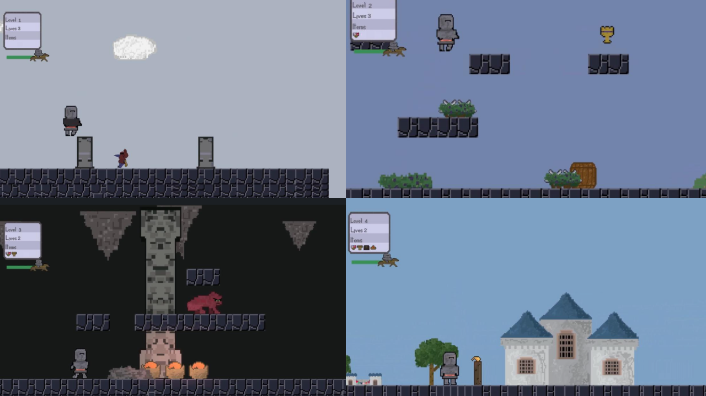

I enjoy creating software, developing games, and learning new technologies. I'm interested in software development and game development.
View My ProjectsI'm a Computer Game Design & Development student, with a concentration in simulation informatics, interested in software and game development. I enjoy creating projects that allow me to combine programming with creativity and problem solving.
I'm currently expanding my experience with languages and technologies and exploring new areas of software development.
This 2D platformer challenges players to explore each level in search of a specific item, secure it, and progress to the next checkpoint while navigating obstacles and confronting or evading enemies.
C# • Unity • 2D Platformer • Game Development • Inventory System • Level Design

A cozy 2D farming simulator where players tend to their plots, water crops, harvest produce, and manage both inventory and stamina.
Java • libGDX • 2D Simulator • Gradle • User Interface • Game Development
A 3D, third-person shooter game where the player ventures into a cave seeking a valuable relic, encountering rival enemies with the same objective.
Unity • C# • 3D Game Development • Third-Person Shooter • Level Design • Animation • Maya
A 2D casual mobile game where players survive a swarm of enemies for a set time as levels get progressively harder.
C# • Unity • 2D Game Development • Mobile Game • Andoid • IOS
A 3D racing simulation where the player competes against various AI drivers to reach the finish line first.
C# • Unity • Single agent AI • Multi-agent AI • Racing Simulation
Social Links
GitHub LinkedIn